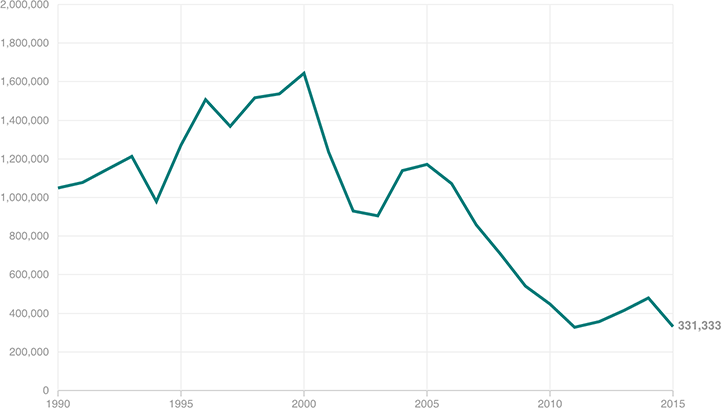

Apprehensions At The Southwestern Border Have Fallen Sharply
In the 1990s and early 2000s, it was routine for more than 1 million people to apprehended at the border every year. But that has fallen dramatically; in 2015, the total was only around 330,000. These numbers are not considered a measure of border patrol effectiveness; instead, the patrol considers this a proxy for the number of people attempting to enter.
